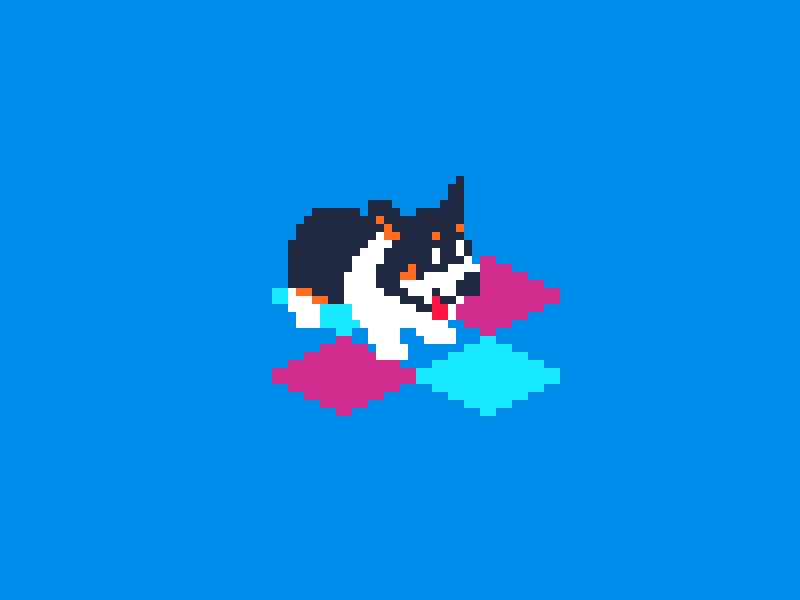
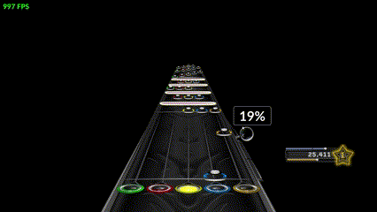

O gênero de ação rítmica testa os reflexos musicais do jogador. O objetivo principal é pressionar botões, tocar instrumentos virtuais ou até mesmo dançar em sincronia exata com a batida da música. Para aumentar a imersão, o gênero inovou ao criar controles especiais em formato de guitarras e baterias, além de tapetes de dança com sensores de pressão. Hoje, a maioria dos jogos oferece modos multiplayer para competições de pontuação ou bandas cooperativas virtuais.


O molde do gênero começou a ganhar vida em 1996 com PaRappa the Rapper. No ano seguinte, a Konami lançou Beatmania, acendendo um mercado emergente no Japão. Foi a divisão musical da empresa, a Bemani, que ditou as regras dos anos seguintes. O maior fenômeno global dessa era foi Dance Dance Revolution (1998), que conquistou os fliperamas do mundo todo e inspirou incontáveis imitações de outras desenvolvedoras.
Inspirados por jogos japoneses como GuitarFreaks, sucessos ocidentais como Guitar Hero e Rock Band revolucionaram o mercado. Trazendo o rock para os consoles com controles de plástico em formato de instrumentos, eles criaram uma nova fonte de renda para artistas reais. Em 2007, era um dos gêneros mais populares dos videogames. Contudo, em 2009, o excesso de continuações e derivados saturou o mercado, derrubando as vendas pela metade e forçando as franquias a um hiato.


Apesar da crise, o mercado encontrou novas formas de expandir. Títulos como Just Dance (Ubisoft) e Dance Central (Harmonix) abandonaram os tapetes físicos e abraçaram os sensores de movimento e câmeras, como o Kinect. Os jogos também adotaram um novo modelo de negócios focado na venda de músicas digitais (DLCs). Com a chegada de uma nova geração de consoles no final de 2015, gigantes como Guitar Hero e Rock Band puderam fazer seu retorno triunfal.
Atualmente, os jogos rítmicos não dependem apenas de grandes estúdios. O cenário explodiu nos PCs e celulares graças a títulos independentes e comunidades engajadas que criam seus próprios níveis, como em osu!, Geometry Dash e Friday Night Funkin'. Além disso, a Realidade Virtual (VR) trouxe uma revolução imersiva com Beat Saber, misturando exercício físico intenso, sabres de luz e música eletrônica, provando que o gênero continua mais vivo e inovador do que nunca.

Os jogos rítmicos eletrônicos não se limitam a apenas um formato, dividindo-se em vários estilos de gameplay. Existem os VSRGs (Virtual Studio Rhythm Games), que simulam instrumentos com notas em cascata, como Guitar Hero. O estilo Tapping exige cliques precisos na tela, como em osu!. Já os Dance & Motion Games, como Just Dance, rastreiam o corpo inteiro. Por fim, temos a imersão total do VR (Realidade Virtual) com Beat Saber, e a experiência única dos Arcades Specialty, com os botões e painéis complexos de Sound Voltex.

Independentemente do estilo, a mecânica central é quase sempre a mesma: a "leitura" visual. O jogo gera notas (ou alvos) que se movem em direção a uma zona de acerto (a hitbox). O seu objetivo é realizar a ação exigida: seja ela pressionar uma tecla, clicar com o mouse, pisar no tapete ou balançar o controle no momento exato em que a nota cruza essa zona, acompanhando a batida da música.
Apenas acertar a nota não é o suficiente; o tempo é tudo. O sistema de pontuação avalia a sua exatidão, classificando seus acertos entre "Perfeito", "Bom" ou "Erro" (Miss). Acertar notas consecutivas sem errar constrói o seu Combo, que funciona como um multiplicador de pontos. Em muitos jogos, cometer muitos erros seguidos zera sua barra de vida (HP) e resulta em "Game Over" antes da música acabar.


Para dominar um jogo rítmico, a chave é a memória muscular e o reconhecimento de padrões. Nas dificuldades mais altas, a tela enche de notas em velocidades altíssimas, exigindo reflexos que vão além do pensamento consciente. A melhor forma de melhorar é começar devagar, entender o BPM (batidas por minuto) das faixas e praticar repetidamente. A comunidade também tem um papel vital, criando mapas customizados (beatmaps) para treinar habilidades específicas.
Camellia é indiscutivelmente o "maior pesadelo" dos jogadores de jogos rítmicos. Ele é conhecido por composições absurdamente complexas, de altíssimo BPM, que misturam múltiplos gêneros eletrônicos na mesma faixa. Suas músicas se tornaram os maiores e mais famosos desafios de precisão mecânica em jogos como osu!, Beat Saber entre outros. A busca dos jogadores por superar suas faixas (como "Ghost" e "Exit This Earth's Atomosphere") o catapultou para o reconhecimento global.


Original da cena de BMS (Be-Music Source), xi é o produtor por trás de "FREEDOM DiVE↓", que é historicamente uma das músicas mais icônicas e temidas de toda a comunidade rítmica. Sua assinatura musical envolve a mistura de arranjos de piano super rápidos (estilo erudito) com batidas pesadas de happy hardcore.
Embora Geometry Dash atue como um jogo de plataforma baseada em ritmo, ele possui uma das comunidades musicais mais densas do mundo. Waterflame já tinha uma carreira na era de ouro dos jogos em Flash (como Castle Crashers), mas a inclusão oficial de suas faixas eletrônicas baseadas em chiptune (como "Time Machine" e "Electroman Adventures") o apresentou a dezenas de milhões da nova geração de jogadores.


Um dos nomes mais influentes do speedcore e J-core na cena de fliperamas japoneses. As músicas de t+pazolite são famosas por serem caóticas, repletas de samples de vozes e com ritmos propositalmente frenéticos para confundir o jogador.